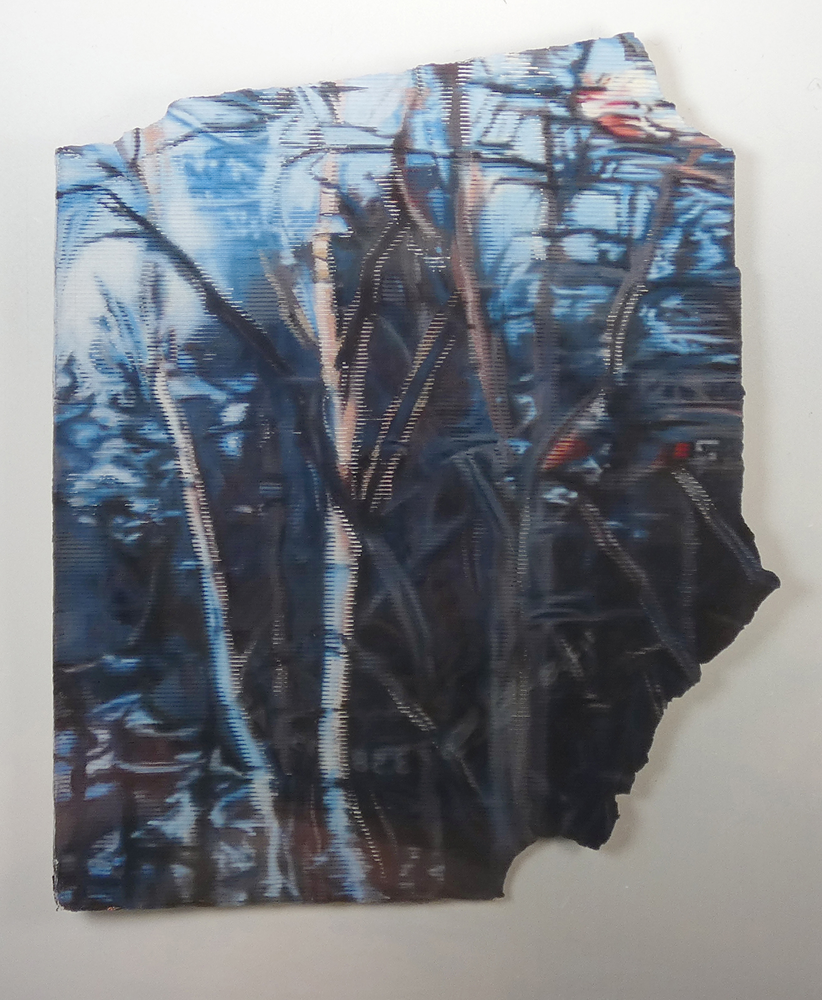
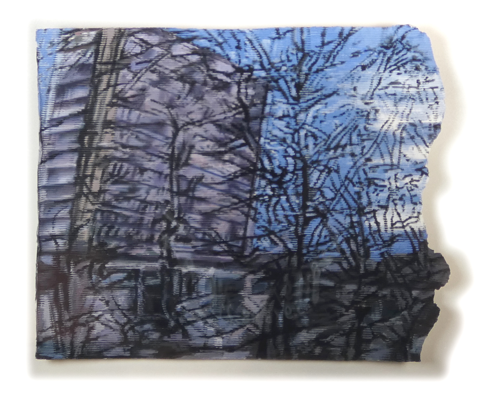
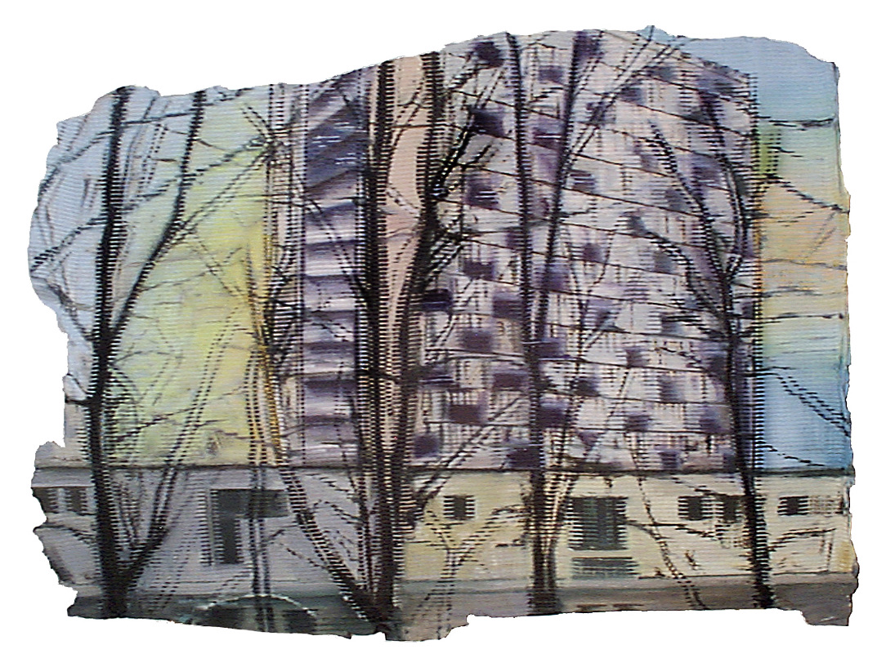
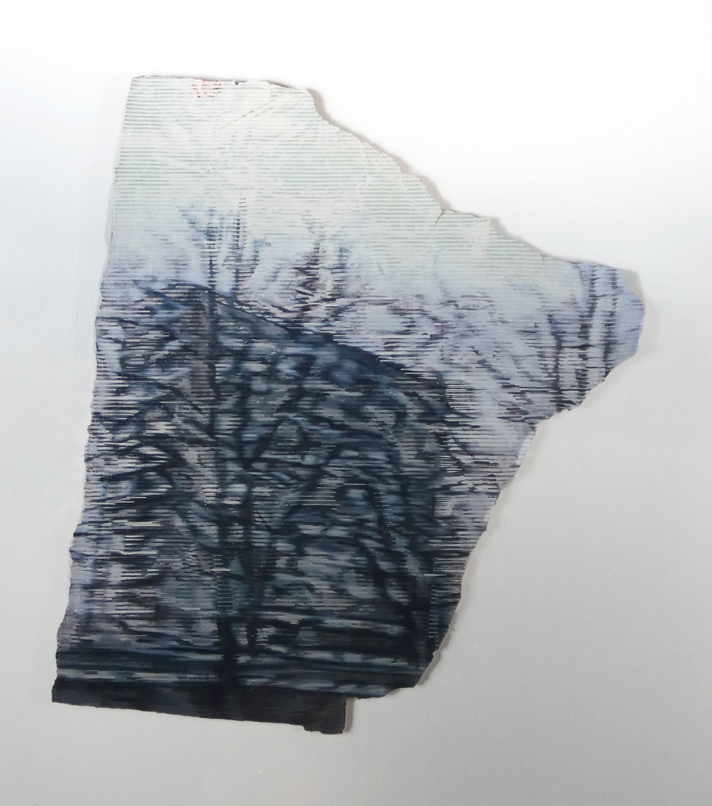
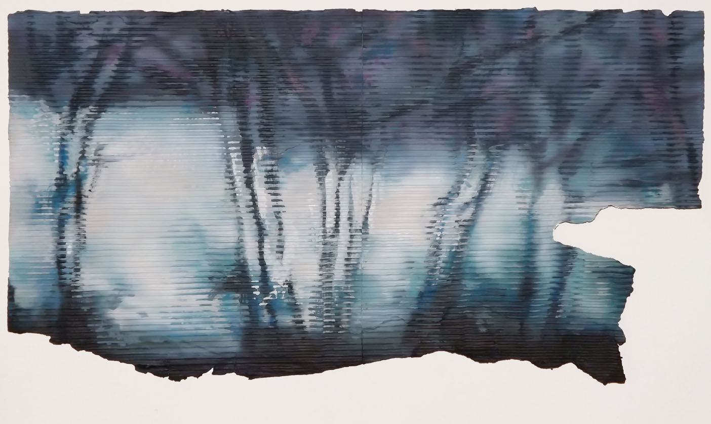
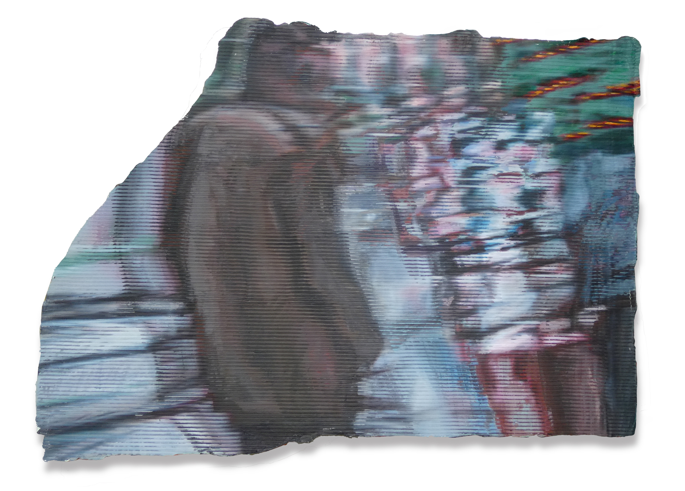
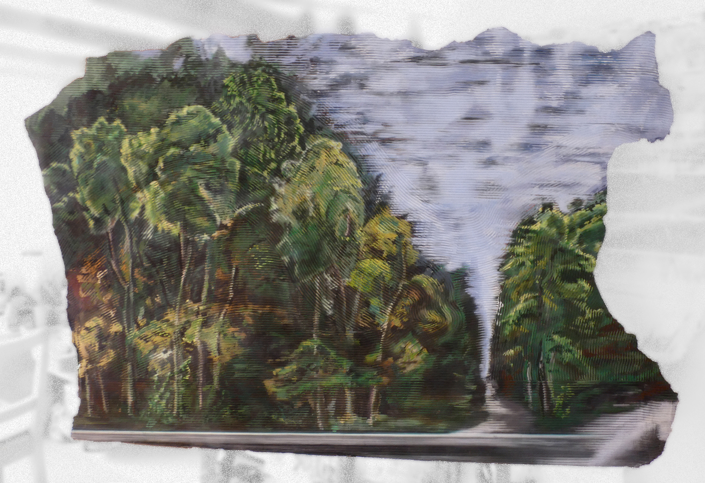

Plakatschwarten

o.T.,
Plakatschwarten: so nennt man Stücke, die von Arbeitern von den großen Werbetafeln heruntergerissen werden, wenn ihre Zeit abgelaufen ist. Ideale Malgründe - Schichtungen vielfältiger Versprechungen: Sorglosigkeit, Genuss, Bequemlichkeit oder Wahlkampf. Ich versah die Stücke mit Zeilenreihen aus Kunststoff - einer neuen Ordnung, dem Zufälligen des Abrisses entgegenwirkend.

Bäume und Wohnblock,

Langenfelde Fassade,

o.T.,

Wohnblock,

Bäume im Vorbeifahren,

Im Hauptbahnhof,

Auf dem Bahnsteig, Doukissis Plakentias,

Cornelia an der Reeperbahn,
Hauptbahnhof,

Hauptbahnhof, Detail

Feldafing,

An der Elbe,

Lichtung,

Andrea,